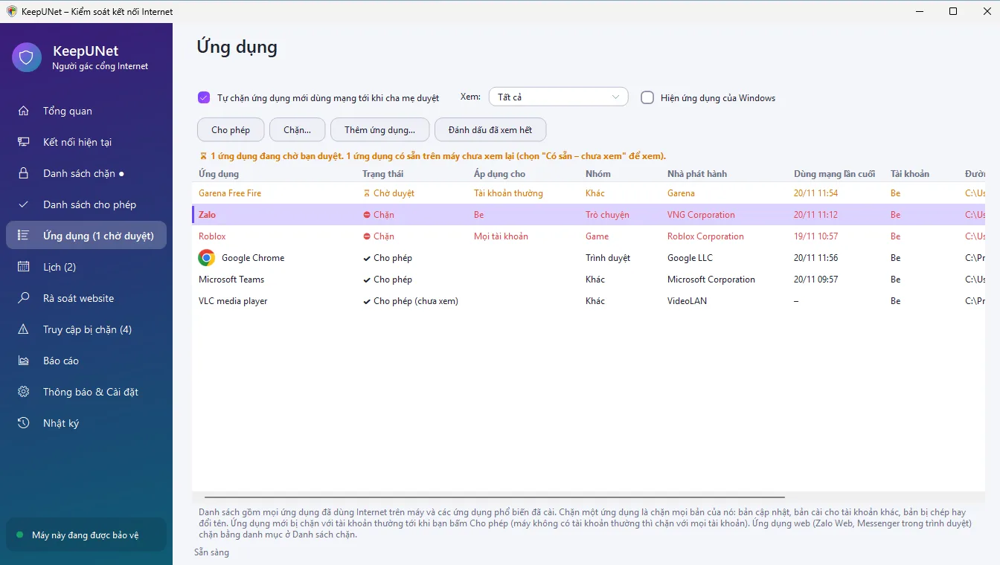

Cập nhật ngày 24/11/2026
Game trên máy tính có hai loại: game cài trên máy (Roblox, Liên Minh, game qua Steam, Free Fire chạy bằng giả lập) và game chơi ngay trên trình duyệt (Poki, Y8…). Muốn chặn cả hai, bạn cần chặn cả tên miền game lẫn ứng dụng game. Có 4 cách: chặn tên miền trên modem hoặc tệp hosts, dùng Microsoft Family Safety, cho con dùng tài khoản Windows thường để hạn chế tự cài game, hoặc dùng phần mềm như KeepUNet: bật danh mục "Game" và duyệt từng ứng dụng mới. Chặn được trong giờ học rồi mở lại cuối tuần.
Con nói "chỉ chơi một ván", rồi hai tiếng sau vẫn ngồi trước máy. Hay đang học online thì mở thêm tab Poki. Bài này hướng dẫn 4 cách chặn game trên máy tính Windows 10, 11 cho con, kèm ưu nhược điểm thật của từng cách để bạn chọn.
Game trên máy tính có mấy loại?
- Game cài trên máy: Roblox, Minecraft, Liên Minh Huyền Thoại, VALORANT, game qua Steam, Epic Games, Garena.
- Game điện thoại chạy bằng giả lập: Free Fire, Liên Quân… chơi trên máy tính qua BlueStacks, LDPlayer hay phần mềm giả lập tương tự.
- Game trên trình duyệt: Poki, Y8, bản Roblox trên web… không cần cài gì, mở trình duyệt là chơi.
Cách nào chỉ chặn được một loại thì con vẫn chơi loại còn lại. Vì vậy khi chọn cách, hãy xem nó chặn được những loại nào.
Cách 1. Chặn tên miền game trên modem hoặc tệp hosts
Thêm tên miền như roblox.com, poki.com vào mục chặn URL của modem, hoặc vào tệp C:\Windows\System32\drivers\etc\hosts theo dạng 0.0.0.0 poki.com (mở Notepad bằng quyền quản trị để sửa).
Ưu điểm: miễn phí, không cài thêm gì.
Hạn chế: phải tự gõ từng tên miền, mà một game thường dùng rất nhiều tên miền phụ. Tệp hosts không nhận dấu sao, nên phải ghi đủ từng tên. Không đặt được giờ (trừ vài modem). Trình duyệt bật DNS mã hoá có thể bỏ qua chặn của modem. Con có quyền quản trị thì sửa lại tệp hosts dễ dàng.
Cách 2. Microsoft Family Safety
Family Safety cho bố mẹ đặt giới hạn độ tuổi cho ứng dụng, game trong Microsoft Store và Xbox, chặn từng ứng dụng và giới hạn thời gian dùng cho từng ứng dụng, game.
Ưu điểm: miễn phí, quản lý từ điện thoại của bố mẹ, giới hạn được số giờ chơi mỗi ngày.
Hạn chế: con phải đăng nhập Windows bằng tài khoản Microsoft trong nhóm gia đình; tài khoản Windows cục bộ không áp dụng được. Lọc web chỉ có tác dụng trên Edge, nên game trên trình duyệt khác vẫn chơi được nếu bạn không chặn các trình duyệt đó.
Cách 3. Cho con dùng tài khoản Windows thường
Tài khoản thường (không phải quản trị) không cài được phần mềm cần quyền quản trị, không sửa được tệp hosts hay cài đặt hệ thống. Vào Settings → Accounts → Family / Other users để tạo tài khoản riêng cho con và để nó ở loại Standard user.
Ưu điểm: miễn phí, làm các cách khác khó bị vượt hơn nhiều.
Hạn chế: tự nó không chặn game. Nhiều game như Roblox cài vào thư mục riêng của tài khoản, không cần quyền quản trị, nên con vẫn cài được. Game trên trình duyệt không bị ảnh hưởng.
Cách 4. Chặn game bằng KeepUNet
KeepUNet chặn cả hai phía: tên miền game (cho game trên trình duyệt) và quyền dùng Internet của ứng dụng game (cho game cài trên máy).
Bật danh mục Game
- Mở KeepUNet → tab Danh sách chặn → bấm Chặn theo danh mục… → đánh dấu Game. Danh mục này gồm Roblox, Garena, Steam, Epic, Riot, Minecraft và các trang game trên trình duyệt như Poki, Y8.
- Chỉ muốn chặn trong giờ học? Nhấp chuột phải vào mục "Game" → Chỉ trong lịch → Giờ học. Ngoài giờ đó, game tự mở lại.
- Muốn mở riêng một trang trong danh mục (ví dụ trang học lập trình), thêm trang đó vào Danh sách cho phép.
Duyệt từng ứng dụng game
- Ứng dụng mới cài và dùng Internet (game, phần mềm giả lập để chơi Free Fire, cả VPN) sẽ ở trạng thái Chờ duyệt: bị chặn mạng trên tài khoản thường của con tới khi bố mẹ bấm Cho phép.
- Ở tab Ứng dụng, lọc Game để xem các game đã có trên máy. Chọn game → Chặn… → chọn chặn với mọi tài khoản hay chỉ tài khoản của con, và chặn luôn luôn hay chỉ trong một lịch.
- Chặn một ứng dụng là chặn mọi bản của nó: bản cập nhật, bản cài cho tài khoản khác, bản bị chép hay đổi tên.

Ưu điểm: chặn được cả game trên trình duyệt lẫn game cài trên máy, trên mọi trình duyệt. Đặt theo giờ và theo từng tài khoản. Cần mật khẩu bố mẹ mới tắt hay gỡ được.
Hạn chế: KeepUNet chặn Internet của game chứ không chặn mở game, nên game chơi được khi không có mạng vẫn chạy. Trả phí sau 30 ngày dùng thử (từ 39.000 đ/31 ngày); chỉ có cho Windows 10, 11, không quản lý điện thoại.
So sánh nhanh
| Modem / hosts | Family Safety | Tài khoản thường | KeepUNet | |
|---|---|---|---|---|
| Chi phí | Miễn phí | Miễn phí | Miễn phí | 30 ngày miễn phí, sau đó từ 39.000 đ |
| Game trên trình duyệt | Có, tự gõ tên miền | Chỉ trên Edge | Không | Có, danh mục sẵn |
| Game cài trên máy | Một phần | Có | Một phần | Có, chặn Internet của game |
| Game mới cài, giả lập | Không | Phải chặn thêm | Chỉ loại cần quyền quản trị | Tự chờ bố mẹ duyệt |
| Chặn theo giờ | Tuỳ modem | Giới hạn thời gian | Không | Có, theo lịch |
| Tài khoản Windows cục bộ | Có | Không | Có | Có |
Mẹo để con hợp tác hơn
- Chặn theo giờ thay vì cấm hẳn. Ví dụ chặn game trong giờ học T2–T6, mở lại tối thứ Bảy. Con biết lúc nào được chơi thì ít tìm cách vượt hơn.
- Thoả thuận trước với con: chơi game gì, bao lâu, khi nào. Nói lý do, đừng chỉ ra lệnh.
- Luôn cho con dùng tài khoản Windows thường, dù bạn chọn cách nào. Bước này không tốn tiền mà giúp các cách còn lại khó bị vượt hơn.
- Nhớ điện thoại và máy tính bảng. Chặn trên máy tính không có tác dụng với thiết bị khác trong nhà.
Thử KeepUNet trên máy của con
Tải miễn phí, cài trong 5 phút, dùng ngay đầy đủ tính năng. Cần hỗ trợ cứ nhắn Zalo 0987 755 325.